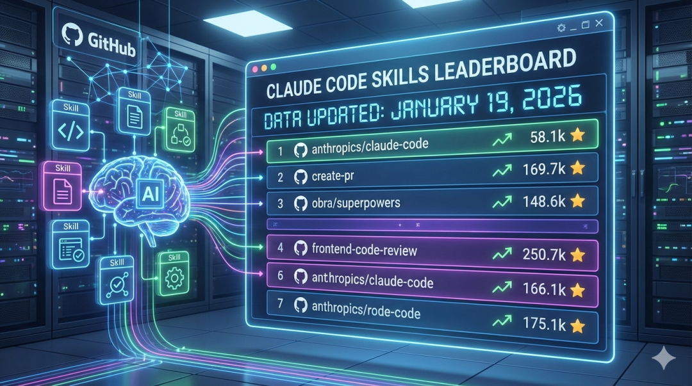

数据更新时间：2026年1月19日
这是一份持续更新的Claude Code Skills GitHub排行榜，收录了官方仓库和社区热门项目。
为什么要关注Skills？
2025年10月，Anthropic正式推出了Agent Skills系统。
简单说就是：给Claude装上专业技能包，让它自己判断什么时候该用。
Skills是一个SKILL.md文件，里面写着某个领域的专业知识和操作流程。装好之后，Claude会根据对话上下文自动识别并触发——你不需要输入任何命令。比如你说"帮我审查这段代码"，如果装了code-review Skill，Claude会自动按Skill里定义的检查清单执行。
⚠️ Skills ≠ Slash Commands：Slash Commands（如
/commit）需要你手动输入触发；Skills是Claude自己判断要不要用。
三个月过去，GitHub上的Skills生态已经爆发式增长。哪些值得装？哪些是噱头？
看排行榜最直接。
官方仓库排行榜（2026年1月）
这两个是Anthropic官方维护的，质量有保障。
官方Skills包含什么？
docx - Word文档处理（创建、编辑、追踪修改） pdf - PDF提取（文本、表格、元数据、合并） pptx - PPT生成与调整 xlsx - Excel操作（公式、图表、数据转换） web-artifacts-builder - 构建复杂的Web组件
这五个是官方Skills里用得最多的。处理文档类任务，先装这套。
社区热门Skills排行榜 Top 20
数据来源：SkillsMP · 2026年1月19日
说明：热度值基于GitHub Stars和使用量综合计算，已剔除功能重复的Skills。
🏆 开发工作流类
🧠 AI/LLM开发类
🛠️ 专项技术类
✍️ 技能创作与管理类
📦 综合框架类
重点项目拆解
🔥 Superpowers（29.1k Stars）
这个项目在2026年1月14日单日涨了1,871星，冲上GitHub Trending榜首。
为什么这么火？
创建者Jesse Vincent把自己的开发方法论打包成了Skills：
强制TDD（测试驱动开发） YAGNI原则（不写用不到的代码） DRY原则（不重复自己）
用了之后，Claude不会上来就写代码，而是先问："你到底想实现什么？" 包含的核心技能：
开发者反馈：用Superpowers之后，Claude可以自主编程2小时以上不跑偏。
安装方式：
claude
📚 awesome-claude-skills（ComposioHQ版，21.6k Stars）
这是一个Skills目录，不是单个Skill。
收录了50+个经过验证的Skills，按用途分类：
ddle;word-break:normal;word-wrap:normal;}
这个列表的价值：不用你一个个找，直接从这里挑。
☁️ cloudflare-skill（2.8k Stars）
把整个Cloudflare平台（60+产品）教给了Claude。
解决的问题：
Workers还是Pages？ Durable Objects还是Workflows？ 怎么配置Bindings？
一个SKILL.md文件，引用了60个参考文档。
适合谁：重度Cloudflare用户。
按用途速查表
不想看排行榜？直接告诉你装哪个。
怎么安装Skills？
💡 Skills有两种形态：Plugin（技能集合包）和单独的SKILL.md文件，安装方式不同。
方法1：安装Plugin（技能集合包）
Superpowers、awesome-claude-skills这类是以Plugin形式发布的，包含多个Skills：
claude
方法2：手动复制SKILL.md（单个技能）
从SkillsMP或GitHub下载单个SKILL.md文件：
项目级Skills（仅当前项目可用）
个人级Skills（所有项目可用）
方法3：使用SkillPort（第三方工具）
近期涨幅最快的项目
数据来源：2026年1月第三周SkillsMP趋势
我的建议
新手：先装官方的anthropics/skills，把文档处理技能用起来。
开发者：直接上obra/superpowers，让Claude按规范流程写代码。
想探索更多：逛逛awesome-claude-skills列表，按需选装。
相关资源
本文数据截至2026年1月19日，Stars数会持续变动，以GitHub实时数据为准。
-END-
更多关于AI工具、Cursor、MCP相关的教程和资讯请持续关注后续分享！
本文完整版详见公众号：未来的回响
文章精校版参见知识星球：AI工具实战派
【限时开放】欢迎加入AI工具实战派交流群一起学习进步～
AI编程、AI运营、工具资料分享请加入知识星球
-推荐阅读-
【AI编程】
【AI设计】
【AI工具】